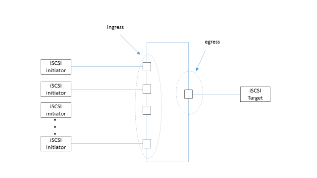

[TroubleShooting] 一个由 Flow Control 引起的 iSCSI 性能问题
问题
在 Unity 上通过 iSCSI 跑 large sequential write IO, iSCSI offload 到网卡， 发现 performance 下降明显。
描述
当 Cisco 5020 switch 上多个 port 接受来自 host 的 connection 到 Unity CNA 的时候，产生 congestion
可以抓到 unity CNA 发给 cisco switch 的 pause 帧
但在 cisco switch 连接 host 的 port 并没有抓到 pause, 并且可以看到在 ingress port 处产生了 dropped packets
因过多的 re-transmission 导致了 performance 下降
而换作是 Juniper switch, 没有明显的 performance 降低的问题
当 host 端连接多个 initiator 到 switch，并且开启多个线程 run IO, 而 storage 端却只有一个 port 连接到 iSCSI array 的情况非常多见，这就带来了congestion 的可能。传统 Ethernet 上面，如果交换机或者 array CNA 支持802.3x的话，那么会开启 standard pause 功能。如下图中 host 不断同时发起 large sequential write IO, storage 是可以感受到 congestion 的，于是 CNA 会向 switch 发 standard pause, 让 switch 停止向它发数据, 这些 pause 帧也被捕获。
分析
首先，应该明确 iSCSI 是要跑在传统 Ethernet 上还是跑在 DCB 上，从原理上分两种情况来讨论。
A）
如果确定了 iSCSI 跑在传统以太网上，那么就要利用也只能利用802.3x来做二层的流控，所以 Host CNA, 中途的交换机，以及 array 的 port/SLIC 都应该打开802.3x (这是个老协议，这些设备都应该支持的)。另外，上面提到的：
“ 但是在 cisco switch 连接 host initiator 的地方并没有抓到 pause ”
这个值得再考虑原因。因为在传统以太网中，是没有协议来保证 congestion control 主动向上传递的，也就是说即使 array 扛不住了，发了 pause 到交换机，交换机虽然不会再发向 array 了，但是还是会继续收包，直到缓存被装满，才会往 initiator 发 pause. 这两个 pause 是异步的，可能会间隔一段时间。
B）
如果确定 iSCSI 跑在 DCB 上，那将是完全另外一套工作方式。交换机上需要设置 DCB mapping, 主要有以下三个方面。
- 指定 iSCSI 流量的优先级
- 该优先级所匹配的服务等级（CoS）
- 为该等级指定带宽百分比
这几点配置的理论依据来自于 BDC 框架下的802.1Qbb(PFC) 和 802.1Qaz(ETS), 利用 DCBX, 通过 TLV 获取到与交换机相连的 end 设备的信息，并根据 mapping, 将 QoS 同步到 end 设备上，以实现统一的 QoS. 另外需要 host CNA, array port/SLIC 都打开 DCB. 然后在这样的环境中，流控是 PFC 来做的，而且做的是针对 iSCSI 所在的服务等级上的精细流控。
实验环境中，默认打开了 PFC, 而针对 cos=3 的 traffic 进行 pause 并没有 apply 到其他的类型的 traffic. 换句话说，iSCSI traffic 并不会被识别为cos=3, 当然也就不会被 map 到所在的 class, 因此 PFC 无法作用于 iSCSI. 同时，因为打开了 PFC, 传统 Ethernet 下的 pause 没起作用，当 ingress cache 被装满，switch 并没有发 standard pause 给 host, 而是直接将大量的数据帧 drop 掉，直接影响了性能。
解决方案
- 打开802.3x的同时，要先关掉 PFC，让全程有且仅有传统以太网流控，并且确认所有设备都能打开802.3x 或者：
- 全程跑在 DCB 上，为 iSCSI 配置相应的 mapping, 让 PFC 做流控。当然需要事先确认所有设备（host CNA, switch, array port/SLIC）都能支持 DCB 并正常工作。